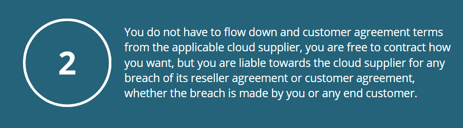

Reselling cloud services can be complex. As a reseller you (and your clients) are exposed to a range of obligations from Microsoft, AWS or Google, and it can be difficult to get an overview of your numerous rights and obligations.
The Basics
To become a reseller, you will need to enter into a reseller/partner/solution provider agreement with the cloud service provider. This will authorize you to resell, but these agreements have a complex range of obligations and risk allocations. It can therefore be difficult to properly understand, assess and mitigate the potential risks for you and your clients.
You will need to establish routines to ensure compliance, and there are "rules of engagement" to ensure that you resell the cloud services in accordance with the terms and conditions. On top of this, the rules of engagement vary between cloud suppliers.
Main reseller models
A red paragraph.
A red paragraph.
This has the advantage for you that any breach by end customer of the customer agreement is normally handled directly between end customer and the cloud supplier. With exception that you as reseller will always be obliged to pay the applicable cloud supplier for any end customer cloud services consumption, you will not be liable towards the applicable cloud supplier for any damages due to breach by your end customers. At least as long as you have ensured that the end customer has accepted the applicable cloud supplier's customer agreement. This way of reselling is often combined with end customer unique tenants, belonging to the end customer.
Often this way of reselling does not give the end customer a unique tenant, and is often used by SaaS suppliers offering multitenant solutions or similar, but also exists as resale models for IaaS/PaaS. Some cloud suppliers do not require you to enter into a reseller agreement as such in order to resell this way, you can merely be a "normal" customer and resell (for instance using Microsoft Hosting exception).
Click here to access the detailed review of Microsoft reseller agreement.